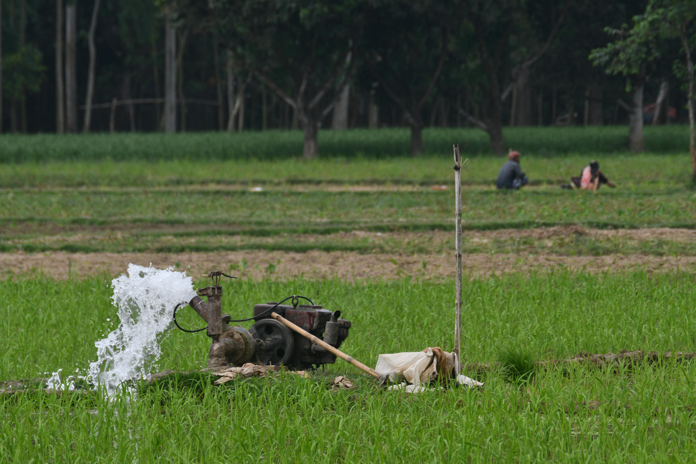
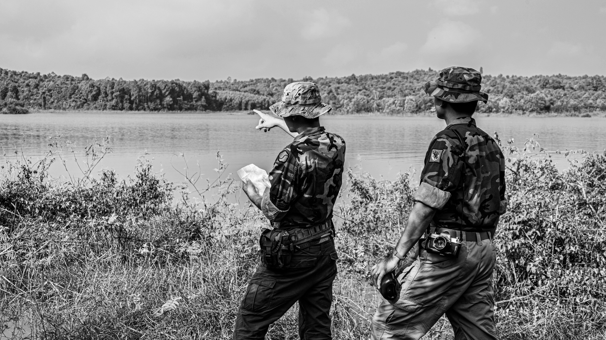
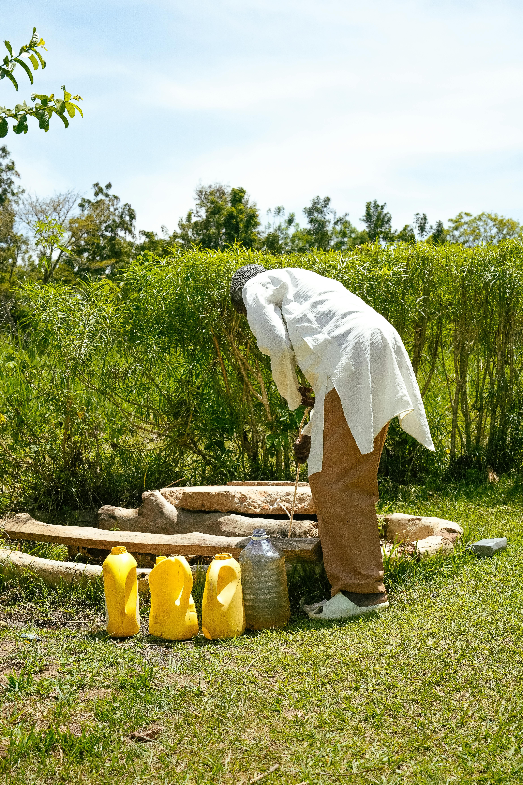

Water Resources Guide
A reliable water supply begins with understanding what can reach the aquifer.
For many projects, groundwater is not just a technical detail. It can be the source of process water, domestic water, irrigation supply, construction water, or emergency backup supply. It can also be part of the surrounding environment that a project must avoid degrading. When groundwater becomes contaminated, the consequences are rarely simple. A project may face water treatment costs, additional testing, complaints from nearby users, regulatory review, operational delay, or the need to secure alternative water sources.
Groundwater protection is therefore not only a water quality issue. It is a project planning issue. The best time to protect a water supply is before the well is drilled, before the storage area is built, before chemicals are handled on site, and before drainage patterns are altered. Once contamination reaches an aquifer, cleanup can be slow, expensive, technically difficult, and dependent on site-specific hydrogeology.
1. Why groundwater needs project-level protection
Groundwater is water stored below the ground in soil, sand, gravel, fractured rock, and other subsurface formations. These water-bearing formations are often called aquifers. Unlike a river or canal, groundwater is not always visible, and contamination may move slowly enough that problems are discovered only after a well has already been affected.
This creates a planning challenge. A project team may see the site boundary, building footprint, drainage canal, storage yard, or proposed well location. What they may not see is the direction groundwater flows underground, the depth to the water table, the vulnerability of the aquifer, or the connection between surface activities and the water supply.
For NBCS, the practical view is simple: groundwater should be treated as both a resource and a receptor. It is a resource when a project depends on wells or aquifer yield. It is a receptor when site activities can introduce pollutants that eventually move below the ground. Responsible development requires both perspectives.

2. How contamination reaches groundwater
Groundwater contamination usually begins at the surface or in the shallow subsurface. A spill, leak, poorly managed waste area, failed septic system, over-application of fertilizers, or unprotected storage yard may not look serious at first. But once contaminants infiltrate through soil and reach the water table, they can move with groundwater flow and create a plume that extends beyond the original source.
Common project-adjacent sources include fuel storage areas, chemical storage rooms, generator sets, vehicle maintenance areas, wastewater facilities, septic systems, solid waste storage areas, stockpiles, drainage ponds, agricultural inputs, and construction staging zones. In coastal or low-lying areas, water supply planning may also need to consider saltwater intrusion, over-pumping, and changes in recharge.
Not all contaminants behave the same way. Some are mobile and dissolve easily in water. Some attach to soil particles. Some break down naturally under certain conditions. Others persist for long periods. This is why groundwater assessment should not rely on guesswork. The right sampling parameters depend on the land use, chemicals handled, wastewater characteristics, nearby sources, and intended use of the water.
3. Warning signs project teams should not ignore
Groundwater contamination is not always visible. Clear water can still contain contaminants that require laboratory testing to detect. However, there are warning signs that should trigger investigation, especially when a project uses or plans to use wells.
These signs may include sudden changes in taste, odor, color, turbidity, staining, scaling, unusual corrosion, complaints from users, recurring gastrointestinal illness near private wells, nearby chemical spills, leaking tanks, flooding of septic areas, unexplained changes in well yield, or water quality results that show increasing trends over time.
For project owners, the key is not to wait for the water to look bad. A baseline water quality test before development or before major changes can help distinguish pre-existing conditions from project-related impacts. That distinction can be important for both technical decision-making and stakeholder confidence.
4. How to protect a project water supply before problems start
The strongest groundwater protection measures are usually preventive. Remediation technologies exist, but they are not a substitute for good siting, proper design, disciplined operations, and routine monitoring. Prevention is often less costly than cleanup.
A practical water supply protection plan should begin with the source. Where will the water come from? Is it a deep well, shallow well, spring, surface water source, utility connection, or combined system? If groundwater will be used, the project should consider well location, sanitary protection, nearby pollution sources, drainage direction, flooding risk, well construction standards, pumping demand, and whether abstraction permits or related approvals are required.
The next step is separation. Potential contaminant sources should be kept away from wells, drainage channels, recharge areas, and permeable ground where infiltration is likely. Fuel, oil, chemicals, hazardous wastes, and wastewater facilities should be designed with containment, roofing or weather protection where appropriate, inspection access, spill response materials, and clear operating procedures.
Finally, protection should be built into daily operations. Purchasing teams should know when new chemicals trigger storage or wastewater concerns. Maintenance teams should report leaks early. Operators should document spills and corrective action. Management should treat water supply protection as part of risk control, not simply as an environmental document attached to a permit file.

5. What a practical groundwater monitoring plan should include
A monitoring plan should answer four basic questions: what will be sampled, where samples will be collected, how often sampling will happen, and what the results will be compared against. Without these details, water quality testing can become random and difficult to interpret.
For projects using groundwater, common monitoring elements may include baseline well sampling, periodic water quality testing, static water level measurements, well inspection, mapping of possible contaminant sources, review of nearby land uses, and documentation of pumping rates. Parameters may include physical indicators, microbiological indicators, nutrients, metals, oil and grease, volatile organic compounds, or other parameters relevant to the site. The exact list should be based on the project, regulatory requirements, and professional assessment.
Sampling should also be defensible. That means using appropriate containers, preservation, holding times, chain-of-custody records, calibrated field instruments, qualified personnel, and accredited laboratories where required. A single laboratory result is useful, but a well-kept trend is often more valuable because it can show whether conditions are stable, improving, or deteriorating.
6. What to do if contamination is suspected
If contamination is suspected, the first step is to protect people and operations. Do not assume that boiling, filtering, or diluting the water will solve every problem. Different contaminants require different responses. Microbial contamination, petroleum hydrocarbons, nitrate, metals, solvents, and salinity each require different testing and treatment decisions.
The second step is to confirm the issue through proper sampling. Repeat sampling may be needed to rule out sample handling error, seasonal variation, or one-time disturbance. If contamination is confirmed, the team should identify the likely source, the affected area, the direction of groundwater movement, the users at risk, and the immediate controls required.
Remediation may involve source removal, containment, treatment at the point of use, well replacement, pump-and-treat systems, in-situ treatment, monitored natural attenuation, or a combination of methods. There is no universal remedy. The appropriate response depends on the contaminant, concentration, hydrogeology, receptors, cost, timeline, and regulatory expectations.
Groundwater protection checklist for project owners
- Identify whether the project will use groundwater, affect groundwater, or both.
- Conduct baseline water quality testing before construction, expansion, or major operational changes.
- Map wells, septic systems, drainage paths, storage areas, waste areas, fuel tanks, and nearby land uses.
- Keep fuel, chemicals, hazardous waste, and wastewater systems away from wells and vulnerable recharge areas where feasible.
- Use containment, secondary storage, spill kits, inspection logs, and clear operating procedures for contaminant sources.
- Prepare a monitoring calendar and keep laboratory reports, field notes, photos, and chain-of-custody records organized.
- Review water supply assumptions when project capacity, water demand, equipment, wastewater flow, or land use changes.
Groundwater protection is part of responsible project development
A project can have good engineering drawings and still have weak water supply protection if groundwater is treated as an afterthought. The more practical approach is to connect hydrogeology, water quality, permitting, waste management, drainage, and operations into one working system.
For NBCS, protecting groundwater means helping clients make informed decisions early: where to locate wells, what to test, how to prevent contamination, how to document monitoring, and how to respond if water quality changes. That approach supports both project continuity and environmental responsibility.
Need help protecting your project's water supply?
NBCS can support groundwater monitoring, water resource evaluation, environmental assessment, wastewater review, and practical compliance planning for projects that depend on reliable water quality.
References
- U.S. Geological Survey: Contamination of Groundwater
- U.S. Environmental Protection Agency: Ground Water Contamination
- U.S. Environmental Protection Agency: Groundwater Technologies
- Federal Remediation Technologies Roundtable: Groundwater Pump and Treat
- World Health Organization: Nitrate and Nitrite in Drinking-water
- DENR-EMB: Philippine Clean Water Act of 2004
- National Water Resources Board: Agency Information
- National Water Resources Board: Water Permit Requirements